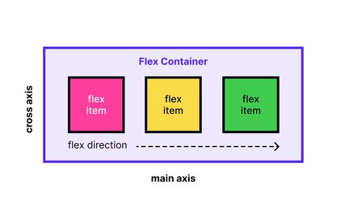
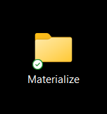
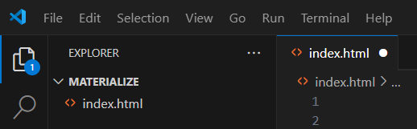
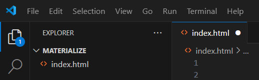
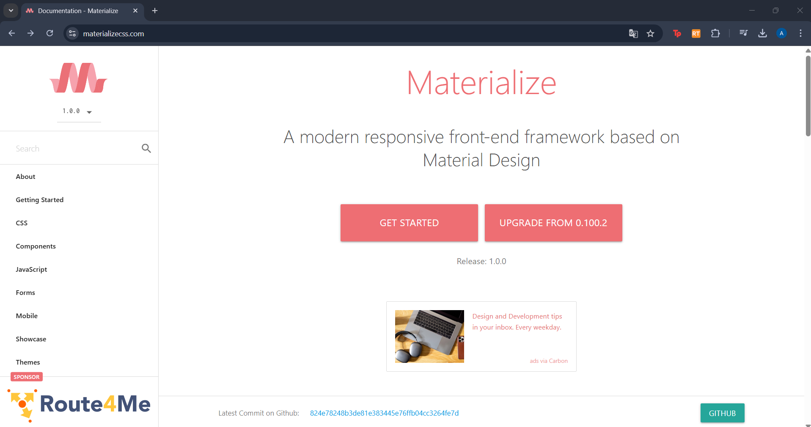
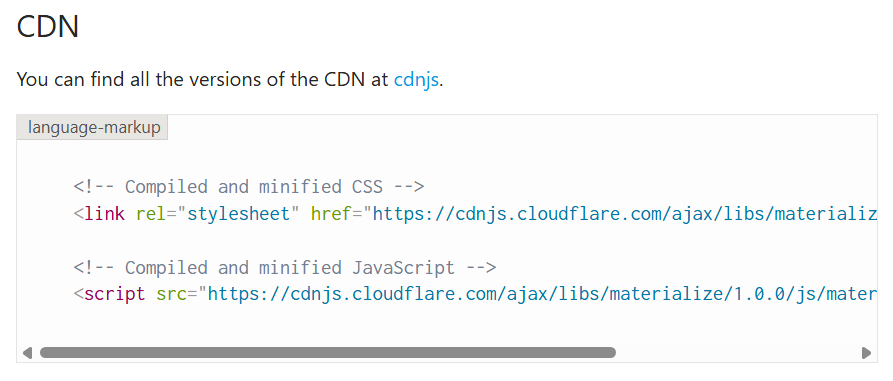
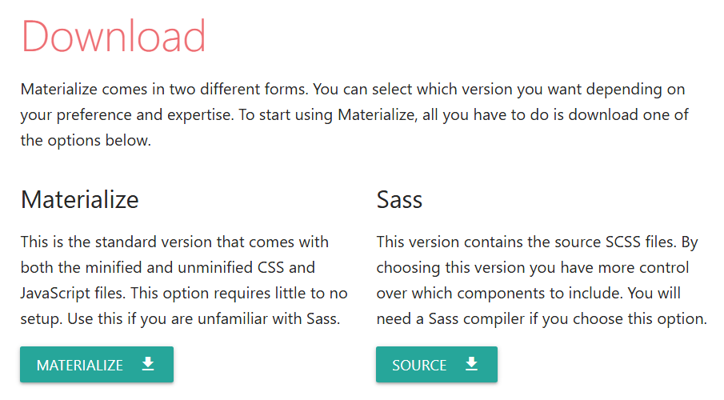
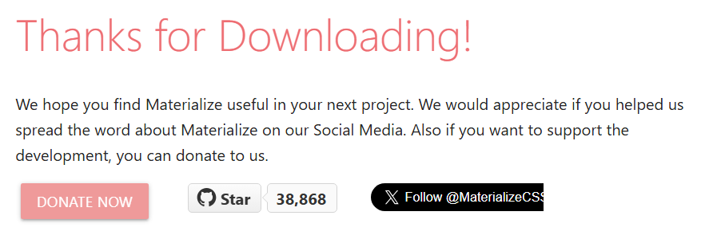
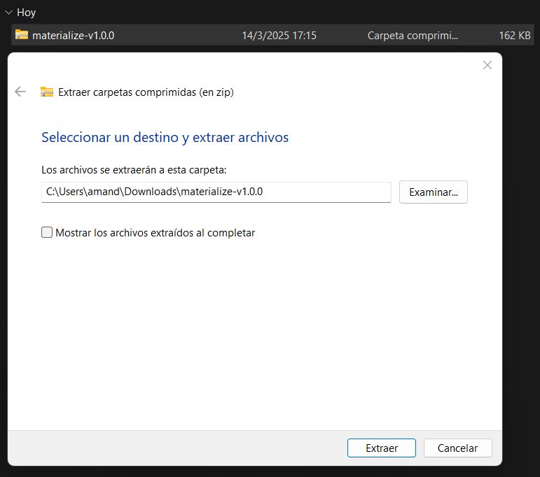
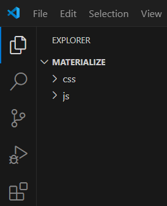

Materialize
Sebastián Navarro - Amanda Chaves
Agenda
- Información básica de Materialize
- Casos de uso
- Pasos de instalación
- Componentes principales
- Ventajas y desventajas
Información básica de Materialize
Origen
Es un framework basado en Material Design desarrollado por Google y lanzado en 2014.
Equipo de trabajo
Alvin Wang, Alan Chang, Alex Mark y Kevin Louie.
Universidad Carnegie Mellon
Fecha de Publicación
Materialize fue lanzado en 2014 y su última versión estable es la 1.0.0 (2018).
Enlace a GitHub

Estrellas en GitHub
¡Materialize cuenta con casi 39000⭐!

Dato Curioso
Materialize fue una de las primeras bibliotecas en implementar un sistema de grid responsivo basado en flexbox.
Casos de Uso de Materialize
1. Portales Educativos
Materialize es utilizado en plataformas educativas gracias a su diseño responsivo y adaptable.
2. Startups y Landing Pages
Las startups lo usan para desarrollar sitios web modernos con efectos visuales atractivos y tiempos de carga optimizados.
3. Paneles de Administración
Ideal para dashboards con gráficos, tablas interactivas y menús laterales plegables.
4. E-commerce
Materialize permite organizar productos en tiendas online de forma atractiva y optimizada.
Imágenes de ejemplo
-

Landpage
-

Paneles de Administración
-

Panel educativo
-

Plataforma de e-commerce
Enlaces a páginas
Pasos para la instalación
Paso 1: Crear el proyecto
1. Crear una carpeta para el proyecto.
2. Abrir la carpeta del proyecto en un editor de texto (por ejemplo: Visual Studio Code) para crear un archivo .html.
 

Paso 2: Acceder a Materialize
1. Ingresar a MaterializeCSS.
2. Hacer clic en el botón "Get Started".

Existen dos formas de integrar Materialize en el proyecto: CDN o Descarga local.
Opción 1: Integración con CDN
1. Copiar el código CDN desde la página de Materialize.
2. Pegar el código dentro de la etiqueta head del archivo .html.

3. ¡Listo! Materialize está disponible en el proyecto.

Opción 2: Descarga local
1. En la página de Materialize, hacer clic en el botón "Materialize" para descargar el archivo.
2. Verificar que se ha descargado un archivo .zip correctamente.
3. Ubicar el archivo en la carpeta de descargas.

3. Extraer su contenido haciendo clic derecho → "Extraer todo".
5. Dentro de la carpeta extraída, copiar las carpetas "css" y "js".

6. Pegar estas carpetas dentro de la carpeta del proyecto.
7. Volver a la página de Materialize y copiar el código de HTML Setup.

8. Pegar este código dentro del archivo .html del proyecto.

9. ¡Listo! Materialize está listo para usarse.

Componentes
Grid System (Sistema de rejilla)
Grid System (Sistema de rejilla)
Botón
Barra de navegación
Input
Collection
- Hoy Comprar víveres
- Mañana Revisar correos importantes
- Próxima semana Asistir a reunión de equipo
- Pendiente Terminar informe mensual
Tarjeta
Tarjeta
Preloader
Footer
Modal
Abrir ModalCheckboxes
Ventajas y desventajas
| Aspecto | Ventajas | Desventajas |
|---|---|---|
| Facilidad de uso | Materialize cuenta con una sintaxis intuitiva y sencilla, muy similar a otros frameworks CSS. Esto facilita la adopción por parte de principiantes, y su documentación accesible acelera el aprendizaje. | A pesar de su simplicidad, la curva de aprendizaje puede ser algo empinada al principio, especialmente si no se tiene experiencia con los principios de Material Design. |
| Flexibilidad | Materialize ofrece una gran flexibilidad mediante sus componentes pre-diseñados, lo que facilita la creación de diseños responsivos de manera rápida. | Aunque flexible, algunos desarrolladores pueden encontrar que la personalización es limitada sin modificar el código base, lo que restringe ciertos aspectos avanzados de diseño. Comparado con otras bibliotecas como Bootstrap, es menos personalizable. |
| Diseño | Basado en Material Design de Google, Materialize ofrece una apariencia moderna y limpia, mejorando la experiencia de usuario con una estética intuitiva y consistente, similar a las interfaces más utilizadas en la web. | El diseño de Materialize, aunque atractivo, puede no ser adecuado para proyectos que requieren un diseño altamente personalizado o que se apartan de las tendencias visuales actuales. |
| Rendimiento | Materialize está optimizado para ofrecer un rendimiento sólido, proporcionando una interfaz fluida y adaptable que funciona bien en diferentes dispositivos y plataformas. | En algunos casos, la cantidad de recursos que ofrece Materialize puede hacer que se vuelva pesado, afectando la velocidad de carga en dispositivos con conexiones lentas o de menor rendimiento. |
| Aspecto | Ventajas | Desventajas |
|---|---|---|
| Apoyo de la comunidad | Materialize cuenta con una comunidad activa y una extensa documentación, lo que facilita la resolución de problemas. Al ser un framework bien consolidado, existen numerosos tutoriales y foros de discusión disponibles. | Comparado con otros frameworks como Bootstrap o TailwindCSS, la comunidad de Materialize es algo más pequeña, lo que puede dificultar la búsqueda de soluciones a problemas específicos. |
| Compatibilidad | Materialize es compatible con la mayoría de los navegadores modernos, garantizando una experiencia de usuario estable y fluida. | Algunas características pueden no ser compatibles con versiones antiguas de navegadores, lo que puede limitar su accesibilidad en entornos con tecnologías desactualizadas. |
| Integración con JavaScript | Materialize incluye componentes interactivos como modales, sliders y dropdowns, facilitando la creación de interfaces dinámicas sin necesidad de mucho código adicional. | Aunque es flexible, depende de jQuery para algunas funcionalidades, lo que puede ser un inconveniente para proyectos que prefieren evitar el uso de jQuery debido a sus dependencias adicionales. |
| Uso en proyectos | Ideal para proyectos pequeños o prototipos rápidos gracias a su diseño atractivo y su facilidad de implementación. | En proyectos más grandes, Materialize puede resultar limitado en comparación con otras soluciones más flexibles, que permiten una mayor personalización. |